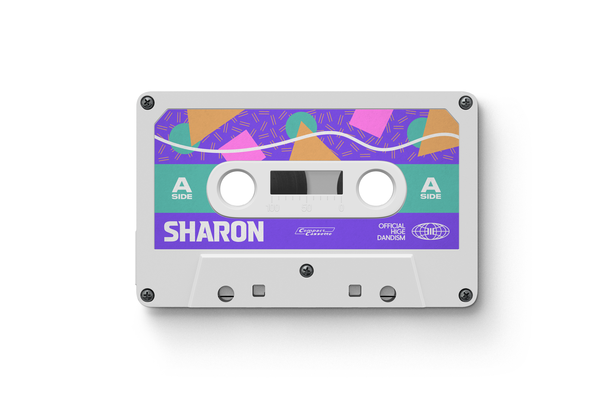
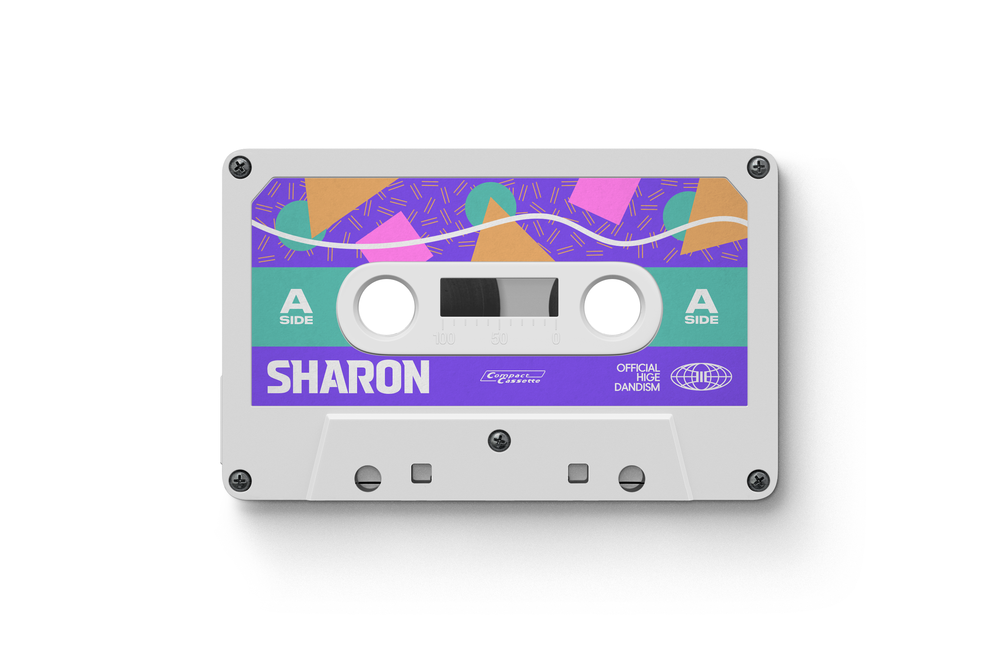

Sharon
OFFICIAL HIGE DANDISM
Released July 3, 2024,
as a digital single prior to the album *Rejoice*.
“Sharon” was chosen as the theme
for the TV drama “Mountain Doctor”.
Written and composed by Satoshi Fujihara,
arranged by Official HIGE DANDISM.
It’s a medium rock song with emotional resonance,
addressed to those waiting for someone’s return.
The music video premiered with the drama tie-in,
and the album *Rejoice* dropped July 24, 2024.
The track is distributed under
IRORI Records / Pony Canyon.